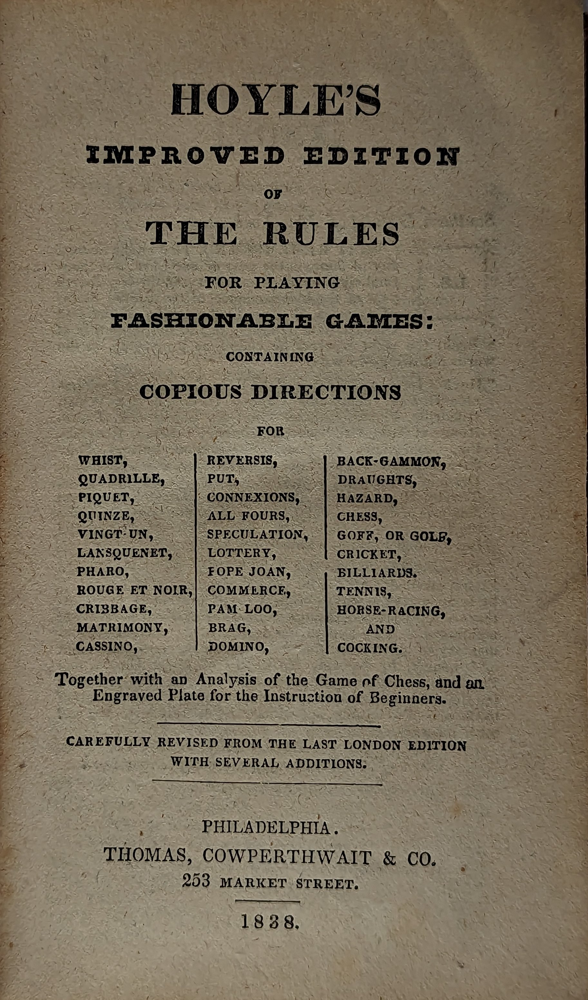

A Descriptive Bibliography of Edmond Hoyle
Copyright © 2014-26 by David Levy
(page updated 2025-04-29)User Guide
Borradaile.1.3
Hoyle's Improved Edition, Thomas, Cowperthwait & Co., first American edition, third issue, by Thomas, Cowperthwait & Co., 1838.
 |
Title: | HOYLE'S | IMPROVED EDITION | OF | THE RULES | FOR PLAYING | FASHIONABLE GAMES: | CONTAINING | COPIOUS DIRECTIONS | FOR | [11 lines to left of rule] WHIST, | QUADRILLE, | PIQUET, | QUINZE, | VINGT-UN, | LANSQUENET, | PHARO, | ROUGE ET NOIR, | CRIBBAGE, | MATRIMONY, | CASSINO, | [11 lines between two rules] REVERSIS, | PUT, | CONNEXIONS, | ALL FOURS, | SPECULATION, | LOTTERY, | POPE JOAN, | COMMERCE, | PAM LOO, | BRAG, | DOMINO, | [11 lines to right of rule] BACK-GAMMON, | DRAUGHTS, | HAZARD, | CHESS, | GOFF, OR GOLF, | CRICKET, | BILLIARDS. | TENNIS, | HORSE-RACING, | AND | COCKING. | Together with an Analysis of the Game of Chess, and an | Engraved Plate for the Instruction of Beginners. | [short rule] | CAREFULLY REVISED FROM THE LAST LONDON EDITION | WITH SEVERAL ADDITIONS. | [short rule] | PHILADELPHIA. | THOMAS, COWPERTHWAIT & CO. | 253 MARKET STREET. | [short rule] | 1838. |
| Collation: | 8o: 1–188 [$1 signed]; 144 leaves, pp. [1–5] 6–159 [160] 161–173 [174] 175–205 [206] 207–288 |
| Contents: | Signature (Page) Reference | Contents | Signature (Page) Reference | Running Titles |
| 11r (1) | title | |||
| 11v–108r (2–159) | see Borradaile.1.1 (1830) | 12v–188v (4–288) | see Borradaile.1.1 (1830) | |
| 108v (160) | engraving of backgammon board | |||
| 111r–117r (161–173) | see Borradaile.1.1 (1830) | |||
| 117v (174) | engraving of draughts board | |||
| 118r–188v (175–288) | see Borradaile.1.1 (1830) |
| Plates: | on 108v(160) engraving: The Game of Backgammon. on 117v(174) engraving: The Game of Draughts. |
| Publisher: | Thomas, Cowperthwait & Co. |
| References: | Horr 693, Jessel 839, Rather 142 |
| Copies Seen: | BFl [I.795/HOYL (b1124866)]; O [Jessel f.639 ]; MWA [G810 H867 H838]; Levy [1676]; Levy [1677] |
| Other Copies: | CaOLU [GV1241.H8 1838]; CaOTP [794 H59 1838]; DSI [GV1243.H86 1838]; MWPI [GV1243.H6 1838]; NN [MV] (Google) |
| Notes: | The same setting of type as Borradaile.1.1 (1830) without the fronispiece, extra engraved title, and chess engraving (despite the title page promise). The plates for backgammon and draughts are different from earlier issues, now appearing on pages that were previously blank. Even the title page is the same setting of type except for the imprint (note the period rather than comma after Billiards in the list of games). The book is octavo, rather than duodecimo, as is the original issue, suggesting that the book was produced from stereoplates. Interestingly, the NN copy, although signed as indicated in the collation statement, retains two signatures from the duodecimo imposition, A2 on page 9 and B on page 25. |